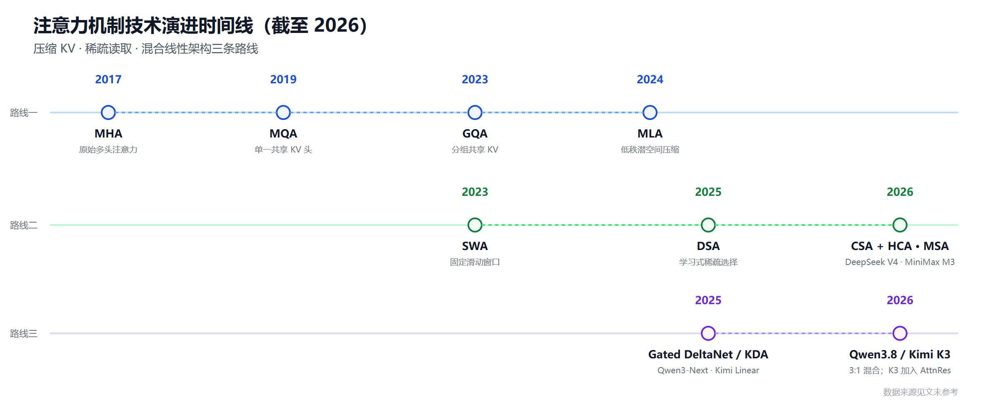
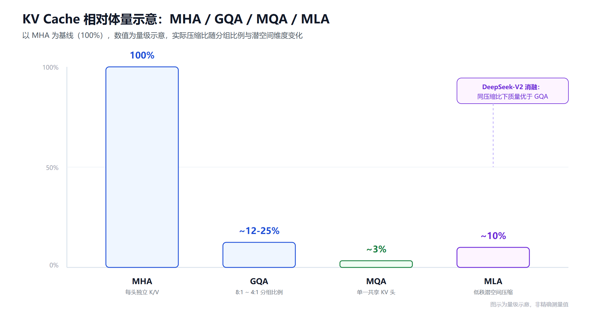

大模型注意力机制全景：从 MHA 到 MLA、DSA 与混合线性架构，一文看懂技术演进
一个 Llama 3.1 70B 模型，在 FP16、128K 上下文下，仅KV Cache（推理时缓存的历史 Key/Value 张量，用于避免重复计算）就要占用约 43GB 显存——这比 Llama 3.2 3B 模型全部权重还大。这不是危言耸听，是把层数、KV 头数、head 维度、序列长度和字节数直接相乘算出来的结果。2022 年之前，主流上下文只有 2K-4K，没人把这当回事；一旦 128K 成为行业标配，KV Cache 就从"细节参数"变成了决定你能不能用消费级显卡跑大模型、能不能把批次做大、能不能把成本压下来的头号瓶颈。
过去七年，几乎所有围绕注意力机制的架构创新，都是在回答同一个问题：该怎么在不明显伤害模型质量的前提下，把这块显存和这部分算力砍下来？从 2017 年的原始 Multi-Head Attention，到 2019 年 Google 提出的 Multi-Query Attention，到 2023 年成为事实标准的 Grouped-Query Attention，再到 2024 年 DeepSeek-V2 带来的 Multi-head Latent Attention，直至 2025-2026 年的学习式稀疏注意力、压缩混合注意力，以及 Qwen3.8、Kimi K3 采用的混合线性架构——这是一条清晰但常被简化成"谁比谁快"的技术脉络。本文尝试把这条脉络讲清楚：每种机制具体压缩了什么、代价是什么、谁在用，以及在 2026 年的今天，工程选型该怎么看这些选择。
为便于阅读，下表给出本文核心缩写的英文全称与中文含义，后文直接使用简称。
| 缩写/术语 | 英文全称 | 中文含义 |
|---|---|---|
| MHA | Multi-Head Attention | 多头注意力，Transformer 原始设计 |
| MQA | Multi-Query Attention | 多查询注意力，所有查询头共享一组 K/V |
| GQA | Grouped-Query Attention | 分组查询注意力，多个查询头分组共享 K/V |
| MLA | Multi-head Latent Attention | 多头潜在注意力，将 K/V 压缩进低秩潜空间再缓存 |
| SWA | Sliding Window Attention | 滑动窗口注意力，只关注固定窗口内的近邻 token |
| DSA | DeepSeek Sparse Attention | DeepSeek 稀疏注意力，用索引器学习式选择关注的历史 token |
| MSA | MiniMax Sparse Attention | MiniMax 块稀疏注意力，按 GQA group 选择相关 KV block |
| CSA | Compressed Sparse Attention | 压缩稀疏注意力，DeepSeek V4 混合注意力中的稀疏分支 |
| HCA | Heavily Compressed Attention | 高度压缩注意力，DeepSeek V4 混合注意力中的压缩分支 |
| KDA | Kimi Delta Attention | Kimi 的线性注意力模块，以门控快权重记忆处理序列 |
| AttnRes | Attention Residuals | 注意力残差，使当前层可跨层检索历史表示 |
| KV Cache | Key-Value Cache | 推理时缓存的历史 Key/Value 张量 |
| RoPE | Rotary Position Embedding | 旋转位置编码 |
| MoE | Mixture of Experts | 混合专家架构，每个 token 只激活部分参数 |
| SSM | State Space Model | 状态空间模型，Mamba 系列的数学基础 |

起点：为什么标准注意力撑不住长上下文
标准 Transformer 的自注意力（Self-Attention）机制让每个 token 都能看到序列中所有此前出现过的 token，并按学到的权重把这些信息混合进自己的新表示。这个机制的表达能力很强，代价也很直接：推理时，模型必须为每一层、每一个注意力头，缓存对应的 Key 和 Value 张量，这样生成下一个 token 时才不用把整段历史重新计算一遍。
问题在于，这份缓存的大小和"层数 × 头数 × head 维度 × 序列长度"成正比。上下文越长，模型越大，这份缓存涨得越快，最终往往比模型权重本身更早撑爆显存。这也是为什么 GPT-4 时代之前，"上下文长度"更多是一个学术指标，而 2023 年之后，它变成了工程团队天天要盯着的成本项。
面对这个瓶颈，业界走出了两条主线路，外加最近两年出现的第三条路：
- 路线一：压缩每个 token 要存的 KV。 保留完整的因果注意力模式，但让每份缓存变小。代表：MQA、GQA、MLA。
- 路线二：减少每次查询要读的 token 数。 攻击的是 O(L²) 的计算复杂度本身，而不是单条缓存的大小。代表：SWA、DSA、CSA/HCA、MSA。
- 路线三：把大部分注意力层换成线性/状态空间模块。 只在少数层保留完整注意力做精确检索，其余层用更便宜的线性机制处理长程依赖。代表：Qwen3-Next、Kimi Linear、Ling 2.5、Nemotron 系列的混合架构。
下面逐一拆解。
路线一：压缩每个 token 的存储——MQA、GQA、MLA
MQA：最激进的压缩，也最早暴露了质量问题
Multi-Query Attention 由 Noam Shazeer 在 2019 年提出，思路很直接：所有查询头共享同一组 Key 和 Value，缓存量直接砍到 MHA 的 1/头数。PaLM、Falcon 等模型采用过这一方案，换来的是显著的推理加速。
但代价同样清楚：在 70B 以上的规模，MQA 在推理和知识密集型基准上的质量退化是可以测出来的。业界后来的选择不是抛弃"共享 KV"这个思路，而是把共享比例调成可调参数——这正是 GQA 的由来。今天 MQA 更多出现在对缓存大小极度敏感、模型规模也偏小的端侧场景，而不是旗舰模型的默认选项。
GQA：2023 年之后的事实标准
GQA 由 Ainslie 等人在 2023 年提出，核心思想是让若干个查询头共享同一组 Key/Value 投影，而不是像 MQA 那样让所有查询头共享一组、或像 MHA 那样每个查询头都独立。这样一来，KV Cache 随共享比例线性收缩，而注意力本身的计算量基本不变。
GQA 能成为事实标准，原因不只是效果好，更是因为它足够简单——不需要改变解码器的整体结构，几乎所有推理引擎都能直接支持。具体的分组比例，各家有自己的取舍：Llama 2 70B 用 8:1（64 个查询头共享 8 个 KV 头），Llama 3.1 70B 和 Qwen 2.5 72B 沿用 8:1，Mistral Large 2 用到 12:1，Llama 3.1 405B 甚至到 16:1。以 4:1 的分组比例为例，KV Cache 能降到 MHA 基线的约 25%，且注意力计算的 FLOPs 几乎不受影响。
2026 年的今天，GQA 依然是绝大多数密集模型（Dense Model）的默认选项：Llama 3、Qwen3、Gemma 3、Mistral Small 3.1 都在用。它也常与后文的 SWA 搭配出现——两者分别攻击"缓存大小"和"每层要看的 token 数"这两个不同的成本维度，并不冲突。
MLA：DeepSeek 带来的第二条压缩路径
Multi-head Latent Attention 由 DeepSeek 在 DeepSeek-V2 论文中提出，逻辑和 GQA 完全不同。GQA 靠"减少 KV 头的数量"省缓存；MLA 靠"压缩每份 KV 的信息量"省缓存——它把 Key 和 Value 投影进一个维度只有几百的低秩潜空间（外加一个专门处理位置信息的解耦 RoPE 分量），缓存的是这个压缩后的潜向量，需要用的时候再重建成完整的多头 K/V。
这里有一个容易被忽略但很重要的细节：DeepSeek-V2 的消融实验显示，同等压缩比下 GQA 的建模效果会明显低于 MHA，而 MLA 却能保持甚至略微超过 MHA 的表现。换句话说，MLA 不只是"用质量换内存"的又一个变体，它在部分场景下同时拿到了内存收益和质量收益，这也是它能被视为比 GQA 更优架构设计的核心论据（参见 Multi-head Latent Attention Is All You Need 中对 GQA 与 MLA 表达能力的理论对比：GQA 总能等价转换成一个 MHA，反之则不一定成立）。
代价是工程复杂度：MLA 需要定制的推理内核（比如 FlashMLA），主流推理框架花了大约一年时间才补齐支持，服务化部署也比 GQA 更"讲究"。采用 MLA 的代表包括 DeepSeek V3/R1、Kimi K2、Ling 2.5、Mistral Large 3；GLM-5 系列则以 MLA 为底层表示，并叠加后文所述的 DSA 稀疏选择；Kimi K3 也保留了 Gated MLA，但只把它放在混合架构中的重量层。一个值得参考的对照实验来自 Sarvam AI：他们同时训练了 30B（用 GQA）和 105B（用 MLA）两个版本，相当于用真实的工程决策而不是理论推导，回答了"什么时候该切换到 MLA"这个问题——业内经验大致是，MLA 在 100B 以上规模的优势更明显，而中小模型上 GQA 因为更好调、生态更完整，仍是更稳的默认选择。

图片来源：数据整理自 PythonAlchemist Attention Variants 交互页 与 DeepSeek-V2 论文，具体压缩比例随分组比例、潜空间维度和模型配置而变化，本图仅为量级示意。
路线二：减少每次查询要读的范围——SWA、DSA、MSA
路线一解决的是"每份缓存有多大"，路线二解决的是"每次算注意力要读多少份缓存"——这是攻击 O(L²) 计算复杂度本身的思路。
SWA：把全局注意力换成局部窗口
Mistral 7B 在 2023 年把滑动窗口注意力（Sliding Window Attention）和 GQA 一起用了起来：每个 token 只关注一个固定大小的近期窗口，而不是整段历史，把注意力计算从 O(L²) 降到 O(L·window)。Mistral 7B 用的是 4096-token 窗口。
纯粹的 SWA 有个明显缺陷：窗口外的信息完全无法直接被关注到。Gemma 系列的解法是"局部+全局"交替：Gemma 2 用 1:1 的局部:全局层比例、4096 窗口；Gemma 3 把这个比例进一步推到 5:1、窗口缩到 1024，代价是极小的困惑度损失（Gemma 3 技术报告 的消融实验显示，更激进的局部化对建模表现影响很有限）。这也是为什么"某模型用了 SWA"这句话意义不大，真正决定效果的是局部:全局的层比例和窗口大小这两个可调旋钮。
DSA：让模型自己学会该看哪些历史 token
DeepSeek Sparse Attention 在 DeepSeek-V3.2 中登场，思路和 SWA 一脉相承——都是只让每个 token 关注历史的一个子集，但选择子集的方式完全不同。SWA 靠位置硬编码一个固定窗口；DSA 用一个"轻量索引器（Lightning Indexer）+ 选择器"两阶段流水线：索引器先给所有历史 token 打一个相关性分数，选择器再挑出分数最高的 top-k 个位置，构成这次注意力计算实际要读取的稀疏掩码。复杂度从 O(L²) 降到 O(L·k)，但保留了内容驱动的选择能力，理论上比位置驱动的 SWA 更能保住长程信息。
DeepSeek 官方数据显示，DSA 在长文本训练和推理场景下带来显著效率提升，同时几乎不损失模型输出质量；第三方评测也报告了 2-3 倍的长文本处理速度提升和 30%-40% 的显存占用下降，DeepSeek API 定价也因此下调超过一半（DataCamp 的 V3.2-Exp 评测）。GLM-5 技术报告 随后采用 MLA + DSA；GLM-5.2 引入可跨层复用索引结果的 IndexShare DSA，官方发布资料显示 GLM-5.3 沿用 5.2 基座，注意力架构并未另起炉灶，主要升级来自后训练。这说明 MLA 压缩缓存的"表示"、DSA 压缩要读取的"范围"可以叠加，但具体索引器设计仍在快速迭代。
到了 DeepSeek V4，官方没有继续把架构简单描述成"MLA + DSA"，而是改用 Compressed Sparse Attention（CSA）+ Heavily Compressed Attention（HCA） 的混合注意力。根据 DeepSeek V4-Pro 官方模型卡，在 1M 上下文下，其单 token 推理 FLOPs 为 DeepSeek-V3.2 的 27%，KV Cache 为后者的 10%。因此，DeepSeek V4 应被视为压缩注意力与稀疏注意力进一步融合的新一代方案，而不能直接归入传统 MLA + DSA。
MSA：MiniMax M3 从全注意力转向块稀疏选择
MiniMax M3 引入的 MiniMax Sparse Attention（MSA） 也属于学习式稀疏路线，但选择粒度与 DSA 不同：轻量 Index Branch 先给历史 KV block 打分，并为每个 GQA group 独立选择 Top-k block；Main Branch 再只对入选块执行精确的块稀疏注意力。它没有像 MLA/HCA 那样重编码或强压缩每份 KV，而是减少每次真正读取和计算的 KV block 数量。
根据 MiniMax M3 官方模型卡，M3 是 428B 级 MoE 原生多模态模型，支持最高 1M 上下文；官方给出的 M3 对 M2 对比是在 1M 上下文下降低至约 1/20 的单 token 计算量，prefill 与解码分别提升约 9 倍和 15 倍。NVIDIA NeMo 的 M3 架构文档 进一步显示，其文本骨干包含 60 层（3 层 Dense + 57 层 MoE），MSA 用于 MoE 层。因此 M3 更准确的描述是 基于 GQA group 的混合全注意力/块稀疏注意力架构，不能再沿用 M2 的“全注意力模型”标签。
不过，无论 DSA、IndexShare DSA、CSA/HCA 还是 MSA，目前都比 GQA 更新，并依赖索引器、稀疏内核和具体硬件实现，尚未成为跨厂商的普遍选项。
路线三：混合线性注意力——把大部分层换成更便宜的机制
前两条路线都还在"改良标准注意力"的框架里。第三条路线更激进：只在少数层保留完整（或潜在）注意力做精确检索，把大部分层换成线性时间的序列建模模块。
Qwen3-Next 是这个方向上第一个接近旗舰规模的例子：它用 3:1 的比例混合 Gated DeltaNet 和 Gated Attention——三层 Gated DeltaNet 配一层保留下来的门控全注意力。Gated DeltaNet 和 Mamba-2 同属"线性时间门控序列模型"这一家族，但用的是 DeltaNet 风格的快权重（Fast-Weight）记忆更新，而不是 Mamba 的状态空间更新：每一步计算 Q、K、V 和两个门控信号，把信息写入一个压缩的小容量记忆，而不是像标准注意力那样构建完整的 token-to-token 矩阵。少数保留下来的全注意力层负责补足 DeltaNet 在精确内容检索上的短板。
Qwen3.5 把这套架构从侧线实验提升为主力系列，Qwen3.8-27B 官方模型卡 则给出了更明确的层布局：64 层按 16 ×（3 × Gated DeltaNet + 1 × Gated Attention） 组织，仍是 3:1 混合比例；其中 Gated Attention 使用 24 个查询头和 4 个 KV 头，因此重量层本身又采用了 GQA。其原生上下文为 262,144 token，并可扩展到 1M。换句话说，Qwen3.8 既不能只标成"GQA"，也不是纯线性注意力，而是 Gated DeltaNet + 使用 GQA 的门控全注意力。
Kimi Linear（Moonshot AI，2025 年 10 月）延续同样的 3:1 结构，但两侧都做了改动：轻量侧的 Kimi Delta Attention 用通道级门控替代 Qwen 的标量门控，记忆更新的精细度更高；重量侧则把 Gated Attention 换成了 Gated MLA。官方数据是在 128K 上下文下 KV Cache 相比全注意力方案减少最多 75%，1M 上下文下解码吞吐提升最高 6 倍，且在同等训练配方下，Kimi Linear 首次在多种场景（短上下文、长上下文、强化学习扩展）下全面超越了纯全注意力基线，而不只是"以质量换速度"。
Kimi K3 技术报告 把这条路线扩展到 2.8T 总参数、104B 激活参数的旗舰模型：每个块由 3 层 KDA 和 1 层 Gated MLA 组成，整体包含 69 层 KDA 与 24 层 MLA，并在末端额外放置 Gated MLA；同时加入 Attention Residuals（AttnRes），让当前层能够跨层检索历史表示。K3 支持 1M 上下文，因此其准确标签应是 KDA + Gated MLA（3:1）+ AttnRes，而不只是笼统的"Kimi Linear"。
Ling 2.5 走的是另一种组合：轻量侧用更简单的 Lightning Attention（一种循环式线性注意力变体）替代 DeltaNet，重量侧沿用 DeepSeek 的 MLA。据 Ling 团队披露，其 32K token 吞吐显著超过同等万亿参数规模的 Kimi K2，说明这条路线上确实存在不同厂商的多种可行搭配，而不是收敛到唯一方案。
Nemotron 系列走得更远：Nemotron 3 Nano 用 Mamba-2 状态空间块承担大部分序列建模工作，自注意力只出现在很小一部分层里；更大的 Nemotron 3 Super 沿用这套混合模式，并叠加了潜在 MoE 和共享权重的多 token 预测（用于投机解码加速）。
这条路线的共识是：长上下文效率是核心卖点，建模效果的绝对上限暂时还是个开放问题——没有公开实验能在完全相同的数据和算力预算下，把混合线性架构和纯全注意力（或 MLA）架构做严格对照。Sebastian Raschka 在其 注意力变体综述 中也提到，这类混合架构目前仍偏"新颍"，对 Agent 类长上下文场景是很有吸引力的候选，但配套的推理引擎优化还没有 GQA 那么成熟，本地跑分有时反而不如经典架构。
主流大模型注意力机制一览
把上面三条路线对应到具体模型，可以看到从经典架构到 2026 年新一代旗舰的技术站位：
| 阶段 | 模型 | 核心注意力机制 | 公开信息与解读 |
|---|---|---|---|
| 经典基线 | GPT-2 / Llama 2 7B | MHA | 标准多头注意力，无 KV 压缩 |
| 经典压缩 | PaLM / Falcon | MQA | 单一共享 KV 头，压缩最激进 |
| 2024-2025 主流 | Llama 3 / Qwen3（Dense）/ Gemma 3 | GQA（部分模型叠加 SWA） | Dense 模型的成熟默认选项 |
| 2023 | Mistral 7B | GQA + SWA | 同时压缩 KV 头数量与每层读取范围 |
| 2024-2025 | DeepSeek V3 / R1 / Kimi K2 | MLA | 低秩潜空间压缩，需要定制推理内核 |
| 2025 | DeepSeek V3.2 | MLA + DSA | 压缩缓存表示，并通过学习式索引缩小读取范围 |
| 2026 | GLM-5 系列（含 5.2 / 5.3） | MLA + DSA；5.2/5.3 使用 IndexShare DSA | 5.3 沿用 5.2 基座，主要升级来自后训练，不是新的注意力架构 |
| 2026 | DeepSeek V4-Pro / V4-Flash | CSA + HCA 混合注意力 | 1M 上下文；官方称 Pro 的 KV Cache 为 V3.2 的 10%，单 token FLOPs 为 27% |
| 2025 | Qwen3-Next / Qwen3.5 | Gated DeltaNet + Gated Attention（3:1） | 多数层为线性序列模块，少数层做精确全注意力检索 |
| 2026 | Qwen3.8 系列 | Gated DeltaNet + Gated Attention（3:1；全注意力层使用 GQA） | 27B 模型为 64 层、24 Q 头/4 KV 头；262K 原生上下文，可扩展至 1M |
| 2025 | Kimi Linear | KDA + Gated MLA（3:1） | 混合线性注意力，官方称 KV Cache 最高减少 75% |
| 2026 | Kimi K3 | KDA + Gated MLA（3:1）+ AttnRes | 69 层 KDA + 24 层 MLA，支持 1M 上下文，并加入跨层表示检索 |
| 2025-2026 | Ling 2.5 | Lightning Attention + MLA | 混合线性注意力的另一种轻重搭配 |
| 2025-2026 | Nemotron 3 Nano / Super | Mamba-2 + 少量自注意力 | 更接近状态空间模型的混合方案 |
| 2025 | MiniMax M2 | 全注意力；KV 头配置未公开 | 官方明确未采用当时的效率型注意力，不能据此进一步猜测为 GQA |
| 2026 | MiniMax M3 | MSA：基于 GQA group 的块稀疏注意力，并保留少量 Dense 层 | 428B 级 MoE、最高 1M 上下文；官方称相较 M2 单 token 计算量降至约 1/20 |
| 闭源领先模型 | GPT-5.6 Sol / Claude Fable 5（及 Opus 4.8）/ Gemini 3.7 Flash | 未公开 | 官方发布资料未披露注意力类型、KV 头数或层布局，故只作能力参照，不参与已知架构横向比较 |
表中最值得注意的变化有四点：GLM-5.3 没有因版本号更新而换用全新注意力机制；DeepSeek V4 已从 V3.2 的 MLA + DSA 演进到 CSA + HCA，不能继续沿用旧标签；Qwen3.8 与 Kimi K3 都采用 3:1 混合结构，但前者是 Gated DeltaNet + 使用 GQA 的 Gated Attention，后者则是 KDA + Gated MLA，并额外加入 AttnRes；MiniMax 也从 M2 的全注意力转向 M3 的 MSA，说明同一家厂商的架构判断会随着索引器、稀疏内核和训练验证成熟而改变。
为什么闭源领先模型没有可比的架构数据
GPT-5.6 Sol、Claude Fable 5、Claude Opus 4.8 和 Gemini 3.7 Flash 仍是能力、延迟、上下文与 Agent 表现对比中的重要参照，但其官方发布页没有公开参数规模、KV 头数、注意力机制或具体层布局。速度更快、价格更低或上下文更长，都不足以反推出模型使用了 GQA、MLA、稀疏注意力还是线性注意力。为避免把推测写成事实，本文将它们标为“未公开”，不纳入已知机制的技术优劣比较；这不代表它们的能力或效率更弱。
各家模型的具体配置（分组比例、潜空间维度、局部窗口大小、混合层比例）也会随版本迭代频繁调整。上表反映的是截至 2026 年 8 月 20 日的公开资料，具体数字仍应以官方模型卡或技术报告为准。
从 M2 到 M3：MiniMax 为什么改变了注意力路线
MiniMax M2 曾是一个值得认真对待的反例。团队在 《Why Did M2 End Up as a Full Attention Model?》 中表示，他们持续尝试过各类高效注意力方案，但在当时的工业级、大规模生产检验中，这些方案尚未稳定超越全注意力；切换机制还会牵动推理引擎适配、训练稳定性和长尾任务鲁棒性。因此 M2 最终保留全注意力，本文也不在官方信息之外猜测其 KV 头配置。
但 M2 的选择不是 MiniMax 对稀疏注意力的永久否定。到了 M3，团队在可训练的块级索引器、按 GQA group 独立检索以及配套 GPU 稀疏内核成熟后，正式转向 MSA。也就是说，MiniMax 的路线不是简单的“全注意力优于稀疏注意力”，而是 M2 阶段认为收益尚不足以覆盖工程风险，M3 阶段则通过算法与内核协同把这笔账重新算通了。
这个前后变化比单独看 M2 更有参考价值：论文里的效率数字必须经过真实训练、硬件内核和生产负载验证，但一次保守选择也不代表技术方向已经被永久否定。选型时既要看机制本身，也要看团队是否具备把理论稀疏性转化为实际吞吐的工程能力。
工程选型的几条实用判断
结合上面的技术脈络，面向不同场景给出几条相对稳的判断：
-
通用 Dense 模型，中等上下文（几万到十几万 token）：GQA 是最稳妥的默认选择，生态支持最完整，出问题时也最容易找到现成的排障经验，8:1 左右的分组比例是常见起点。
-
需要极长上下文（百万级 token）且已在使用 DeepSeek/Kimi/Qwen/MiniMax 系模型：应按具体版本选择 MLA + DSA、CSA + HCA、MSA 或混合线性架构，而不能只看厂商品牌。它们是当前能拿到较大缓存和计算收益的方向，但要预留时间验证推理引擎兼容性与实际吞吐，不要只看论文里的理论压缩比。
-
端侧或对延迟极度敏感的小模型：MQA 或激进比例的 GQA 依然有价值，此时缓存大小往往比绝对建模质量更影响用户体验。
-
对稳定性、可预测性要求高于极限效率的生产系统：MiniMax 从 M2 到 M3 的变化提供了更完整的参照——当稀疏机制和配套内核尚未验证成熟时，保留全注意力是合理选择；当索引器、训练配方与硬件实现共同成熟后，再切换到 MSA 也不迟。关键不是永远保守或永远追新，而是用自己的生产负载验证收益能否覆盖复杂度。
-
无论选哪种机制，都不要只信论文里的效率数字：分组比例、窗口大小、混合层比例这些参数都会显著影响最终表现，落地前最好用自己的真实上下文长度分布和硬件条件做一次独立压测。
小结
大模型的注意力机制演进，本质上是一场围绕 KV Cache 和计算复杂度展开的持续优化：GQA 靠"共享 KV 头"压缩缓存，MLA 靠"低秩潜空间压缩"做同一件事但保留了更多质量；SWA 靠"固定窗口"减少每次要读的历史范围，DSA 靠 token 级学习式索引选择，MiniMax M3 的 MSA 则按 GQA group 做块级稀疏检索；DeepSeek V4 的 CSA + HCA 继续融合压缩与稀疏路线；Qwen3.8、Kimi K3 等混合线性架构则把大部分层换成线性时间模块，只在少数层保留精确检索能力。没有一种机制是全场景最优解，GQA 的工程成熟度、MLA 的质量-压缩比、稀疏/压缩混合注意力与线性架构的长上下文效率，各自对应不同的业务约束。MiniMax 从 M2 全注意力转向 M3 MSA 也再次说明，架构选择是算法、内核和生产验证共同作用的阶段性结果。对于架构未公开的闭源模型，最可靠的做法仍是明确标注未知，而不是根据跑分反向猜测。
免责声明
本文基于截至 2026 年 8 月 20 日可访问的公开论文、官方技术报告和第三方评测整理，旨在提供技术背景与学习参考，不构成模型选型、采购或投资建议。文中涉及的效率提升比例、KV Cache 压缩数据均来自厂商官方披露或第三方复现实验，具体数值会随模型版本、评测设置和硬件环境变化，请以最新官方文档为准。闭源模型未公开的架构信息均明确标注为未知，本文不依据性能、价格或上下文长度推测其注意力机制。
参考来源
- Fast Transformer Decoding: One Write-Head is All You Need（MQA 原始论文）
- GQA: Training Generalized Multi-Query Transformer Models from Multi-Head Checkpoints
- DeepSeek-V2: A Strong, Economical, and Efficient Mixture-of-Experts Language Model（MLA 原始论文）
- Multi-head Latent Attention Is All You Need
- Mistral 7B（SWA + GQA 原始论文）
- Gemma 3 Technical Report
- Native Sparse Attention: Hardware-Aligned and Natively Trainable Sparse Attention
- DeepSeek-V3.2-Exp 模型卡（Hugging Face）
- DeepSeek-V3.2-Exp: A Guide With Demo Project（DataCamp）
- GLM-5 Technical Report
- GLM-5 官方文档（Z.ai）
- GLM-5 MoE DSA 架构文档（NVIDIA NeMo）
- GLM MoE DSA 模型文档（Hugging Face Transformers）
- DeepSeek-V4-Pro 官方模型卡
- DeepSeek V4 Technical Report
- Qwen3.8-27B 官方模型卡
- Kimi Linear: An Expressive, Efficient Attention Architecture
- Kimi K3: Open Frontier Intelligence
- Ling 2.5 模型卡（Hugging Face）
- Why Did M2 End Up as a Full Attention Model?（MiniMax 官方博客）
- MiniMax M3 官方发布说明
- MiniMax M3 官方模型卡（Hugging Face）
- MiniMax Sparse Attention（MSA 技术论文）
- MiniMax M3 架构文档（NVIDIA NeMo）
- Previewing GPT-5.6 Sol（OpenAI）
- Claude Fable 5 与 Mythos 5（Anthropic）
- Introducing Gemini 3.7 Flash（Google）
- A Visual Guide to Attention Variants in Modern LLMs（Sebastian Raschka）
- MHA, GQA, MQA, MLA, SWA, DSA 交互对比（PythonAlchemist）
相关阅读
- 开源大模型选型对比 2026
- 大模型推理框架对比指南 2026
- DSpark vs DFlash：投机解码推理加速对比
- DeepSeek Harness：Agent Runtime 开源实践
- 大模型评测全指南：从 MMLU、SWE-bench 到 Arena
推荐搭配装备
善其事，利其器。以下硬件能最大化你的AI体验👇
🔗 通过以上链接购买可支持本站持续运营 🙏